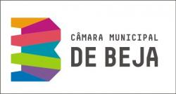
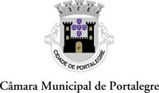

  <footer class="footer-distributed">

    <div class="footer-left">

      <div>
            
      </div>

      <p class="footer-links">
        <a href="#">Principal</a>
        ·
        <a [routerLink]="['/about']" routerLinkActive="router-link-active"> Bases</a>
      </p>

      <p class="footer-company-name">En 2Minutos &copy; {{anio}}</p>
      
      <p class="footerText"> * Proyecto cofinanciado por el 
          Fondo Europeo de Desarrollo Regional (FEDER)
          a través del programa
          INTERREG V-A ESPAÑA-PORTUGAL (POCTEP) 2014-2020</p>
    </div>

    <div class="footer-center">

      <div>
        <i class="fa fa-map-marker"></i>
        <p><span></span> Madrid, España</p>
      </div>
      <div>
        <i class="fa fa-envelope"></i>
        <p><a>en2minutos@fundaciongsr.es</a></p>
      </div>

    </div>

    <div class="footer-right">

      <p class="footer-company-about">
        <span></span>
      </p>

      <div class="footer-icons">
             
             
             
             
          
        
      </div>

    </div>

  </footer>

